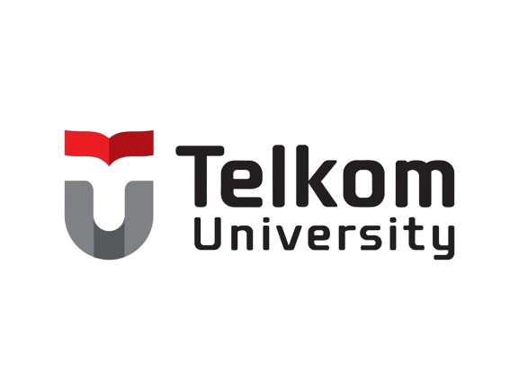
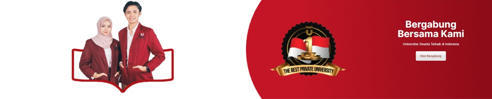

Sejarah Telkom University

Telkom University, dulunya merupakan Sekolah Tinggi Teknologi Telkom (STT Telkom) yang diresmikan oleh Presiden Soeharto pada tahun 1994. Pada tahun 2008, STT Telkom berubah menjadi Institut Teknologi Telkom (IT Telkom). Lalu, pada 14 Agustus 2013, di bawah naungan Yayasan Pendidikan Telkom (YPT), berdirilah Telkom University atau Universitas Telkom
Berdirinya Telkom University ini merupakan gabungan dari 4 institusi di bawah naungan YPT, yaitu Institut Teknologi Telkom (IT Telkom), Institut Manajemen Telkom (IM Telkom), STISI Telkom, dan Politeknik Telkom. Dulunya, para mahasiswa STT Telkom mendapat beasiswa dan ikatan dinas. Namun, sejak menjadi universitas, Tel-U sudah nggak ada jalur ikatan dinas lagi. Tapi tenang, Tel-U menyediakan jalur beasiswa penuh sampai lulus.
Akreditasi dan Ranking Telkom University
- PTS Terakreditasi Unggul pertama di Indonesia oleh BAN-PT
- PTS Terbaik No.1 di Indonesia oleh Kemendikbud RI
- Ranking 1 PTS Terbaik versi Webometrics
- Peringkat ke 1001-1200 oleh QS World University
- Peringkat 401+ oleh Times Higher Education Asia University’s Ranking (The AUR) 2021
Fasilitas di Telkom University
- Asrama putra & putri
Untuk mahasiswa baru (maba), ada asrama yang disediakan pihak kampus. Totalnya ada 18 gedung. 10 gedung untuk asrama putra, dan 8 gedung untuk asrama putri. Di setiap gedung akan ada helpdesk dan kakak asrama yang siap membantu kamu. Ada juga security untuk menjaga keamanan gedung.
- Email kampus dan iGracias
Setiap mahasiswa di Tel-U akan memiliki email kampus, juga disediakan layanan Office 365 gratis untuk masing-masing. iGracias adalah aplikasi yang bisa digunakan untuk berbagai keperluan mahasiswa. Contohnya, melihat jadwal kuliah, presensi, nilai ujian, kode dosen, mengajukan tiket keluhan, KRS, pengajuan dosen pembimbing, jadwal sidang, dan keperluan lainnya dalam 1 aplikasi.
- Poliklinik dan ambulance
Kalau kamu nggak enak badan, nggak usah bingung. Langsung aja ke poliklinik yang ada di Telkom University. Buka 24 jam, bahkan sudah ada poli gigi juga di sana. Kalau kamu perlu dirujuk atau dibawa ke rumah sakit, Telkom University juga menyediakan ambulance dan driver yang selalu ada dan siap siaga.
- Open Library
Telkom University punya perpustakaan yang namanya Open Library. Di perpustakaan ini, kamu bisa membaca dan meminjam berbagai jenis buku, lengkap banget. Selain itu, ada banyak tempat yang nyaman untuk nugas bareng, ada yang di area terbuka, ada juga yang di dalam ruangan khusus. Di dalam Open Library, ada library cafe juga, lho. Kamu bisa beli makanan ringan dan ngopi gratis di sana!
- Fasilitas lainnya
Fasilitas di Telkom University yang lainnya ada kantin, convention hall (TUCH), tempat ibadah, lapangan olahraga, kolam renang, fitness center, lapangan tenis, lapangan panahan, jogging track, dan lainnya.

Pendaftaran dan Jalur Masuk Telkom University
Jalur pendaftaran masuk Telkom University ada banyak banget. Ada yang pakai nilai rapor, ada juga yang bisa dapat beasiswa full sampai lulus. Untuk lebih lengkapnya, simak penjelasan berikut ini, ya!
- Jalur Prestasi Akademik (JPA)
- Nilai rapor semester 1-5 minimal 75
- Siswa SMA/SMK/MA/ setara lulusan 2 tahun terakhir
- Mengunggah berkas rapor di portal SMB Telkom
- Biaya pendaftaran Rp 400.000
- Sertifikat akademik & non akademik (juara nasional/ internasional)
- Tanpa tes
- Jalur Beasiswa
Terbagi menjadi 2, yaitu beasiswa unggulan (gratis biaya pangkal & biaya semester sampai lulus), dan beasiswa pintar (gratis biaya pangkal).
- Siswa SMA/SMK/MA semua jurusan
- Lulusan 2 tahun terakhir
- Biaya pendaftaran Rp 200.000
- Tes online
- Jalur Kelas Internasional (JKI)
Seleksi Rapor
- Siswa SMA/SMK/MA/setara lulusan 2022 atau 2021
- Nilai semester 1-4 minimum 70
- Mengikuti tes EPrT
- Membeli PIN pendaftaran
JKI (Online Test)
- Maksimal berusia 25 tahun
- Lulusan SMA/SMK/MA/setara
- Mengikuti tes online
- Mengikuti tes EPrT
- Membeli PIN pendaftaran